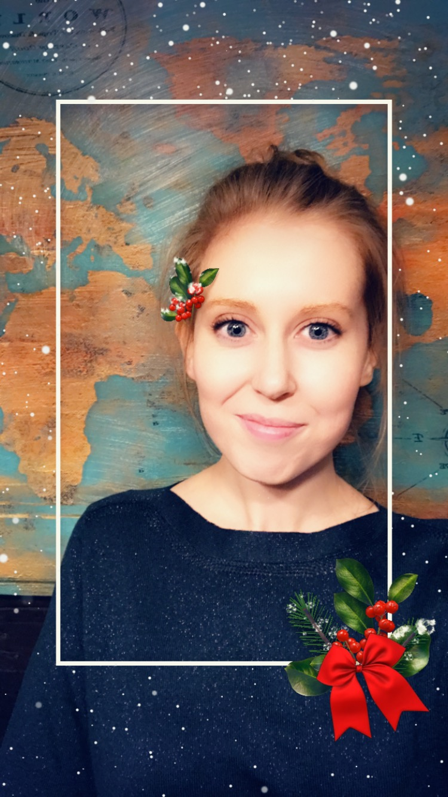
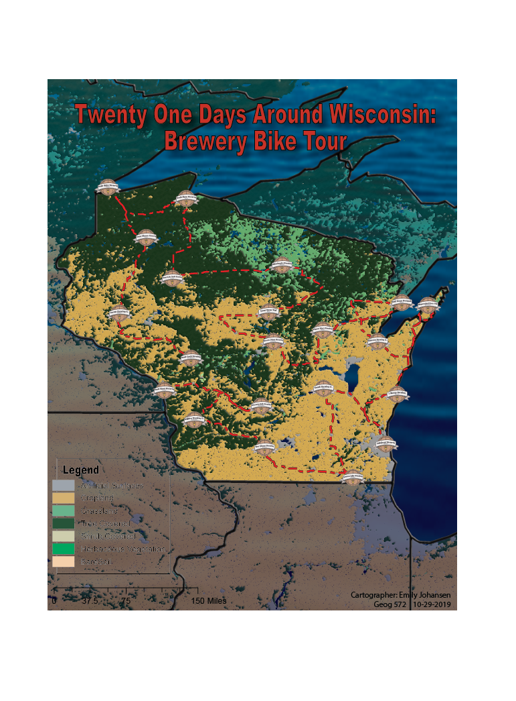
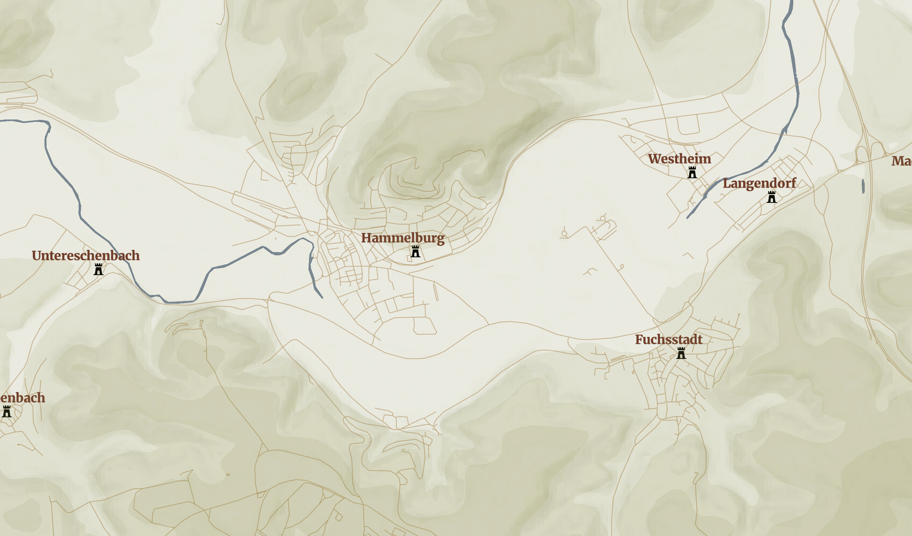

I went to the University of Wisconsin - La Crosse to earn my undergraduate degree in Geography with a concentration in GIS and a minor in Spanish. During my time there I worked as a Graphic Designer in the Center for Leadership, Involvement, and Graphics. I also held two internships, one as a GIS Intern for USGS in La Crosse at UMESC, as well as at the City of Onalaska as an intern for the City Planner.
I now work as a Land Use Specialist in Property Listing in the La Crosse County Zoning Planning and Land Information office in La Crosse, WI. I am also working on my masters through the University of Wisconsin - Madison's Masters of Web Map Planning and GIS program.
I spend my weekends working at Kohls and find what ever time I can mountain biking the upper hixon trails in La Crosse, and fostering dogs!
Social Media can be a great way to learn and connect with others in GIS and Cartography! Check out my LinkedIn and Twitter pages!
This map is an example of a project prepared as a promotional map for the newly created International Championship Tour. The objective was to create a tour in Wisconsin to promote cycling in my area. The competition runs the length of 21 stages, with a day break every 7 stages, the route covering approxamitely 100 miles per day.To avoid as many highway routes as I could, I designed the map to follow state bike trails. Each stage runs just over or just under 100 miles between stops. The stops all fall at breweries in Wisconsin, giving the bikers something to do while their finished with their day and resting before the next. Following state bike trails will give the bikers an extremely scenic view, showing off the best Wisconsin has to offer. The final posting was a pdf that could zoom into each area for necessary details.
This map was created using MapBox. It shows a web map that promoted a movie version of the TV show 'Hogan's Heroes'. Using MapBox I was able to work with open datasets, Global to local scaling, and use different terrains throughout to create what I wanted to portray for this movie. Changing the amount of detail seen at each scale makes a world of difference on online mapping. The image below is just a preview of the map, but click here to see the MapBox version!

Feel free to contact me by email.
Click here to see my full resume.
ejohansen0909@gmail.com
©Emily Johansen
last updated: December 11, 2019
{kind=link}